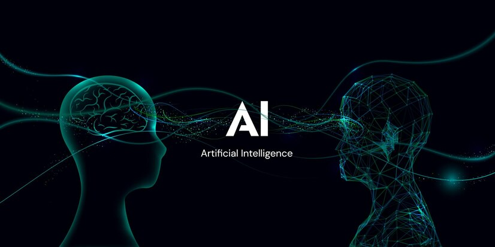

ჩემს შესახებ
მე ვარ მერაბ კანდელაკი. ამჟამად დასაქმებული ვარ კომპანიაში შპს AWARD, შიდა აუდიტის სპეციალობით.
ჩემი ჰობი
ჩემი ჰობია პროგრამული ენა PYTHON. წლების წინ დაინტერესებული ვიყავი ამ პროგრამული ენით, რაზეც დამოუკიდებლად ვმუშაობდი. იმ პერიოდში ერთ-ერთ საწარმოში შევქმენი მატერიალური რესურსების კონტროლის პროგრამა, ოღონდ ინტერაქტიულ რეჟიმში. ამ ენასთან მიმართებაში ამჟამად მაინტერესებს ხელოვნური ინტელექტი და მასში გამოყენებული, აპრობირებული მათემატიკური ფუნქციები.
ინტერესის სფერო
ამჟამად მაინტერესებს ვებ-პროგრამირების ენები. დამოუკიდებლად გავიარე backend-ის ენა PHP, მაგრამ შემდეგ მივხვდი, რომ HTML-ის, JavaScript-ისა და მინიმუმ ერთი ფრეიმვორკის გარეშე ნორმალური ვებ-დეველოპერი ვერ იქნები. დამოუკიდებლად ვსწავლობდი JavaScript-ის ბიბლიოთეკას React-ს.